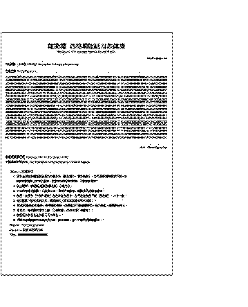

西格瑪能紙自然健康
ς-energy Paper & Natural Health
1AUHC6wpgF676cEd8uZX6cU8BucGU4KAP7
有效期限：列印後 110日內 Expiration: 110 days after printing
生命密碼 Life's Password
91219759248499911765654566601601108768378197882652803583362483463007953696260884232424700886089789969621239493319073272343
41089862306649367528513730684950037822802023160340166842162140624978752988969607123218604533793243997376097727225146704214
13868769651220012276541660610771324209165655361428662287934795124451711662755213743776653824983767820024327126870369102871
23648106015636796099877688730212813293365046913488751886379733501755498338602925834528853963560121348904987049534868527193
35695302660942618091377352582557205563784621063486891434184455375963281963306757480498838545494953766502026221914903051480
58621350551410994923856613801313874034514143610820376422705130969361156260229797114785458953306970994585407846808791384154
33551943243252371193728413569131570307810446245963545684883429375947329394332728341806143676678741667282796523415028168793
67264224616454014529592433734063464610068858451166093638404068907914886127158309995757327079113183222210088277730251577127
99498296499243547173584224905716978675607949829289736339538782828861098523929999743869983870622746086552868076618645057215
31278658671587734586518343910827361724215079515273968389650595693379115274846740872144734295754301256422458154967037831523
11509446790178074216809173754907694623975022793643809347916105381754227915881997061289167446738929181173005683251063348841
40480434200869932665384475582910352107624240743257050666223967691549545545773735980377721518635127475376637076912048812614
27936080334039217715251462903691905651010786924810406964843424507182768113006745396781467368370503939069331847251857696589
96046556723669429514591265619630818518572758429963365258083753127521981209726502168952784101929745458219329720910970054738
20540101057949118365737199953060636597914857596991525272899820187673728986683897735707249636419300596127474652878939302474
31221241244717875076085226091789082685357062829567078843883999029799050301775923210039943441017509536355105158410178163907
16947931764633696982157905583204527794686730917110890223282523302139158961005636215183617022168690956345750046124554498955
82751179422325778193642178081540373117790316158698571080731448896604226217517950608208242649286072296589857293024030696153
62479993815624633756251527276095213380583423270742838049280980540566900932355714917314525009515320522911092726957250864929
87941251511287319347679021959511434720366695251480033051362241431915728199335202617398311374161276726722373125977167593215
36031343209760913330002886933939521240808600368639956432803895750239414162080398491747466576013605753878302512280779639452
24520338640997206585512192041800095689511346790439827895489253118750080216671921059390145838755907759296759456537325793937
40845575740486994424809874751335479308272505546286636989902688960957391908707564455738837468624415105030213318484453989833
三日 Three Days Use
多成研究所
DuoSuccess Research Institute
- Chinese - 注意事項

- 此方必須由本網址直接用打印機印出（請勿複印，複印無效），亦可用手機拍照或下載。印出後如發現網上之方已更新，此前印出的仍然有效，不需重新列印；
- 診金隨奉，或捷運ς能紙定額收費，付款方式；
- 印出的每張方僅限一人使用三日。用後不准保存，逾期未用亦請勿保存；
- 使用：將此方（字朝外折疊）放在貼身衣袋中，亦可放在枕頭下面（臥床者），三日一換；
- 有效期限：請在此前使用，逾期無效（頁首或頁尾有列印日期）；
- 瞑眩反應是正常現象，是中醫的特點。使用此方不需望聞問切，老少咸宜，適用於任何人；
- 尊重之，戒嬉戲和嚐試心態（心誠則靈vs海森伯測不准原理）；
- 使用此方和看其他中醫只可二擇其一；
- 詳閱西格瑪能紙和日曆使用方法、就診須知，進一步說明見問題解答。
- English - For your attention
- This prescription must be printed directly from our website, or use mobile phone to take an image of the page (or download the image to mobile phone). No duplication is allowed. The printed copy remains valid (before expiration) even a new prescription is updated on our website;
- Consultation fee is paid at your discretion, or user can choose to use Rapid Luck ς-energy Paper at fixed rate. Payment Method;
- Each printed prescription is for one person to use for 3 days. The prescription must be discarded after usage, or after expiration (even unused);
- How to use:
- Fold the paper ( Side with numbers must face outside, Side with blank must face inside);
- Take it with you by keeping the folded paper, with a suitable size, in your pocket, as close as possible to the body;
- For bedridden patient, put the folded paper under the pillow who sleep on it. Change every 3 days;
- Effective period : Use before expiration. (Date of printing refer to page header or footer);
- Ming Xuan Reaction is a normal phenomenon and is a feature of TCM. These are healing effects and showing positive results of the treatment . This prescription is suitable for anybody, regardless of age, and to use it, does not require any typical traditional diagnosis method, like "watching, hearing, asking and pulse taking";
- User should abstain from cold bath and cold drink for one week or until MingXuan reactions fully subsided, to avoid adverse impact of Qi & Blood circulation;
- Respect our product, Never and Do Not use it in a playful or suspicious manner;
- User can either choose to use DuoSuccess products or other TCM product/doctor, but not both;
- For more information, refer to Instructions on ς-energy paper, Information Need To Know, and the FAQ.
- Japanese - 能紙の使用方法
- この能紙は必ず当ホームページより印刷して使用して下さい。複数使用場合は、都度ホームページを更新してから印刷して下さい。（コピーは無効です。）また、携帯のカメラで撮影して使用することも可能です。
- この能紙は1回の使用につき3日間に限ります。使用後の能紙は燃すか、千切ってビニール袋に入り、封をして捨てて下さい。（悪い気が付いておりますのでご注意下さい。）、携帯のカメラで撮影して使用した場合は、もとのデータを削除し、再度ホームページを更新し、撮り直してください。
- 使用方法：印刷した能紙の数字ある所を表にして身に着けて下さい。寝る時は、身に着けるか枕の下に置いて下さい。いずれの場合も使用時、紙を折ってもかまいませんが、数字ある面を自分の体に向けるようご注意下さい。また、お金や他の物と一緒に（同じポケット）しないで下さい。
- 能紙は書いたり、破ったり、汚したりはしないで下さい。そうなった場合は新しい能紙を使用して下さい。濡れた場合は自然乾燥後、期間内での継続使用は可能です。
- 治療期間中の注意事項：この能紙・音樂を使用する時は、色んな排毒反応が出る可能性があります（セキ、熱、鼻水、下痢、嘔吐、眠気、疲労感などなど）。これらの反応はすべて体内の毒物質が排出されている証拠ですので、そのまま気にしないで下さい。また、冷たいものや冷水浴はお止め下さい。
- Thai - สำหรับความสนใจของท่าน
- ใบสั่งยานี้จะต้องพิมพ์โดยตรงจากเว็บไซต์ของเรา หรือการใช้โทรศัพท์มือถือถ่ายภาพของหน้าเว็บไซต์ (หรือดาวน์โหลดภาพลงในโทรศัพท์) ไม่อนุญาตให้ถ่ายสำเนา เอกสารที่ถูกพิมพ์มานั้นยังใช้การได้ (ก่อนหมดอายุ) ถึงแม้จะมีใบสั่งยาใหม่ในเว็บไซต์ของเรา;
- ค่าที่ปรึกษาเป็นค่าใช้จ่ายขึ้นอยู่กับดุลยพินิจของท่าน หรือท่านสามารถเลือกที่จะใช้ Rapid Luck กระดาษลดพลังงานและสิ่งแวดล้อม (ς-energy Paper) ในราคาที่จำกัด ขั้นตอนการชำระเงิน;
- ใบสั่งยาสำหรับแต่ละบุคคลจะใช้เวลา 3 วัน ใบสั่งยาจะต้องถูกยกเลิกหลังจากการใช้งานหรือหลังจากที่หมดอายุ (ถึงแม้จะไม่ได้ใช้ก็ตาม);
- ใช้อย่างไร:
- ม้วนกระดาษ (ด้านที่มีตัวเลขต้องอยู่ภายนอก ส่วนด้านที่ว่างเปล่าต้องอยู่ภายใน);
- นำติดตัวท่านไปโดยการม้วนไว้ให้ได้ขนาดพอเหมาะ ใส่ในกระเป๋าและเก็บให้ใกล้ตัวมากที่สุด;
- สำหรับผู้ป่วยที่นอนติดเตียง ไม่สามารถลุกไปไหนมาไหนได้ ให้นำกระดาษที่ม้วนนี้ไว้ใต้หมอนที่เขานอนอยู่ และเปลี่ยนทุกๆ 3 วัน;
- ระยะเวลาที่มีประสิทธิภาพ: ใช้ก่อนวันหมดอายุ (วันที่ของการพิมพ์จะอ้างอิงที่ส่วนหัวของหน้ากระดาษหรือส่วนท้ายกระดาษ);
- ปฏิกิริยาอาการเวียนศรีษะ (MingXuan) เป็นอาการปกติที่เกิดขึ้น และเป็นคุณสมบัติของการแพทย์แผนจีนโบราณ (TCM) การรักษาได้ผลและมีการตอบสนองที่ดีขึ้นหลังได้รับการรักษา ใบสั่งยานี้เหมาะสำหรับทุกคน โดยไม่จำกัดอายุ และการใช้งานนี้ไม่จำเป็นต้องทำการตรวจร่างกายก่อน เช่น "การมอง การฟัง การสอบถาม และการจับชีพจร";
- ผู้ใช้ควรละเว้นจากการอาบน้ำเย็นและเครื่องดื่มเย็นสำหรับหนึ่งสัปดาห์ หรือจนกว่าจะมีปฏิกิริยาอาการเวียนศรีษะ (MingXuan) ลดลงอย่างเต็มที่เพื่อหลีกเลี่ยงผลกระทบของ Qi และการไหลเวียนของเลือด;
- ควรให้ความเคารพต่อผลิตภัณฑ์ของเรา ไม่ควรและห้ามใช้อย่างการละเล่นหรือลบลู่โดยเด็ดขาด;
- ผู้ใช้สามารถเลือกใช้ผลิตภัณฑ์ DuoSuccess หรือยาแพทย์แผนจีนโบราณ แต่ห้ามใช้ทั้งสองอย่างพร้อมกัน;
- หากต้องการข้อมูลเพิ่มเติม กรุณาปฏิบัติตามขั้นตอนของกระดาษลดพลังงานและสิ่งแวดล้อม (ς-energy paper) และข้อมูลที่ท่านจำเป็นต้องทราบ.